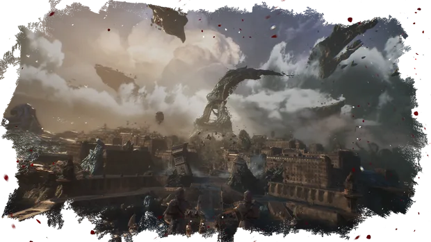

Combat réactif au tour par tour

Dans cette évolution des JRPG, des actions en temps réel viennent enrichir le principe du combat au tour par tour.
Créez des builds uniques correspondant à votre style de jeu à partir de vos attributs, vos compétences et votre équipement tout en trouvant des synergies entre les membres de votre expédition.
Accédez à une dimension active du combat : esquivez, parez et contrez en temps réel, enchaînez les combos en maîtrisant le rythme des attaques, et ciblez les points faibles de vos adversaires grâce à un système de visée libre. « Demain est inéluctable »